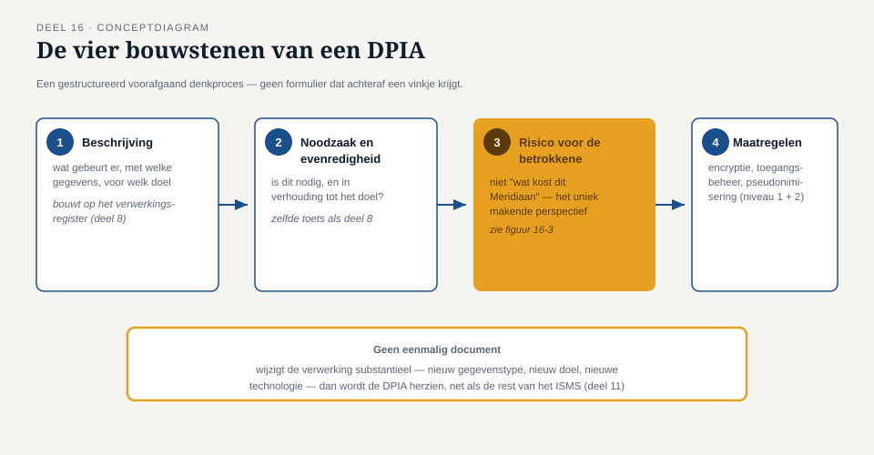
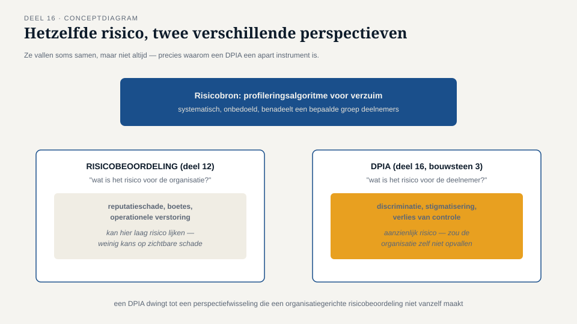

Deel 16 — DPIA I
Reader · Ductus-cursus Informatiebeveiliging en privacy · niveau 2 (professional) · deel 16 van 22
Casusvervolg: Sannes nieuwe instrument
Het dreigingsmodelleringsritueel uit deel 15 werkt goed voor beveiligingsrisico's, maar Sanne mist er iets in: een vergelijkbaar, verplicht instrument voor risico's die specifiek betrokkenen raken, niet de organisatie. "Jullie vragen steeds 'wat kan er misgaan voor Meridiaan'," zegt ze tegen Merel en Tarik. "Ik moet ook kunnen laten zien dat we hebben gevraagd: wat kan er misgaan voor de deelnemer zelf?" Dat instrument bestaat al, wettelijk verankerd: de gegevensbeschermingseffectbeoordeling (Data Protection Impact Assessment, DPIA). Dit deel behandelt wanneer een DPIA verplicht is en hoe je hem uitvoert; deel 17 verdiept de grondslagenkant die een DPIA vaak blootlegt.
1. Wanneer een DPIA verplicht is
De AVG vereist een DPIA wanneer een verwerking waarschijnlijk een hoog risico oplevert voor de rechten en vrijheden van betrokkenen. Drie situaties waarin dit bijna altijd geldt:
- Systematische en uitgebreide beoordeling van persoonlijke aspecten, inclusief profilering, met rechtsgevolgen voor de betrokkene.
- Grootschalige verwerking van bijzondere categorieën persoonsgegevens (deel 3) — bij Meridiaan direct relevant vanwege de gezondheidsgegevens in arbeidsongeschiktheidsdossiers.
- Stelselmatige en grootschalige monitoring van een publiek toegankelijke ruimte, fysiek of digitaal.
Toezichthouders publiceren daarnaast vaak aanvullende lijsten van verwerkingstypen die zij als hoog risico beschouwen. Bij twijfel geldt: liever een DPIA te veel dan te weinig — de kosten van een DPIA die achteraf niet strikt noodzakelijk bleek, zijn klein vergeleken met de kosten van een verwerking die achteraf een onbeoordeeld hoog risico blijkt te hebben gehad. Voor het Mutatieplatform is de conclusie voor Merel en Sanne snel duidelijk: de verwerking van arbeidsongeschiktheidsdossiers alleen al maakt een DPIA verplicht, los van de vraag of andere criteria ook van toepassing zijn.
2. Wat een DPIA in essentie doet
Een DPIA is, net als dreigingsmodellering (deel 15), een gestructureerd voorafgaand denkproces — geen formulier dat achteraf wordt ingevuld om een vinkje te zetten. Het kernidee: voordat een risicovolle verwerking daadwerkelijk begint, beoordeel je systematisch of ze noodzakelijk en proportioneel is, welke risico's ze voor betrokkenen met zich meebrengt, en welke maatregelen die risico's beperken.
Een DPIA bestaat doorgaans uit vier bouwstenen:
- Een systematische beschrijving van de verwerking — wat gebeurt er, met welke gegevens, voor welk doel, wie is betrokken (dit bouwt rechtstreeks voort op het verwerkingsregister uit deel 8).
- Een beoordeling van noodzaak en evenredigheid — is deze verwerking daadwerkelijk nodig om het doel te bereiken, en is de omvang van de verwerking in verhouding tot dat doel? Dit is dezelfde noodzaak-toets die in deel 8 de testomgevingen deed sneuvelen bij een beroep op gerechtvaardigd belang.
- Een risicobeoordeling vanuit het perspectief van de betrokkene — niet "wat kost dit Meridiaan als het misgaat" (dat is de risicobeoordeling uit deel 12), maar "wat betekent dit voor de deelnemer als het misgaat": financiële schade, discriminatie, reputatieschade, verlies van controle over eigen gegevens, of in het uiterste geval fysieke of psychologische schade.
- Maatregelen om de risico's te beperken, inclusief waarborgen en beveiligingsmaatregelen — hier komen de instrumenten uit niveau 1 en de eerdere delen van niveau 2 (encryptie, toegangsbeheer, pseudonimisering) terug, nu specifiek gemotiveerd vanuit het risico voor de betrokkene.
3. Het perspectief dat een DPIA uniek maakt
Het cruciale verschil tussen een DPIA en de risicobeoordeling uit deel 12 zit in bouwsteen 3: het perspectief. Een reguliere risicobeoordeling vraagt "wat is het risico voor de organisatie" (reputatieschade, boetes, operationele verstoring). Een DPIA vraagt expliciet "wat is het risico voor de persoon van wie de gegevens zijn". Deze twee vallen soms samen (een groot datalek is slecht voor zowel Meridiaan als de deelnemers), maar niet altijd: een verwerking kan voor Meridiaan laag risico lijken (weinig kans op reputatieschade, geen directe financiële impact) en tegelijk voor een individuele deelnemer een aanzienlijk risico vormen — bijvoorbeeld een profileringsalgoritme dat systematisch, onbedoeld, een bepaalde groep deelnemers benadeelt zonder dat dit de organisatie zelf ooit zou opvallen als "risico".
Dit is precies waarom een DPIA een apart instrument is en niet simpelweg "de risicobeoordeling uit deel 12, met AVG-labels erop geplakt": het dwingt tot een perspectiefwisseling die een organisatiegerichte risicobeoordeling van nature niet maakt.
4. Wie voert een DPIA uit, en wie beslist?
Een DPIA wordt uitgevoerd onder verantwoordelijkheid van de verwerkingsverantwoordelijke (Meridiaan, deel 4), met verplicht advies van de FG — Sanne moet worden geraadpleegd, en die raadpleging moet aantoonbaar zijn vastgelegd, ook al is haar advies niet in elk opzicht bindend. Dit is een directe toepassing van de FG-onafhankelijkheid uit deel 4: Sanne adviseert vanuit haar onafhankelijke rol, maar het besluit over hoe met een DPIA-uitkomst wordt omgegaan, ligt uiteindelijk bij de juiste risico-eigenaar (deel 12) — vaak het bestuur, gezien de aard van de verwerkingen waarvoor een DPIA verplicht is.
Een DPIA is bovendien geen eenmalig document: als de verwerking substantieel verandert (een nieuw gegevenstype, een nieuw doel, een nieuwe technologie), moet de DPIA worden herzien. Dit sluit aan bij de cyclische aard van het hele ISMS uit deel 11 — een DPIA is niet "af" na oplevering, maar onderdeel van een doorlopend proces.
5. Wanneer voorafgaande raadpleging van de toezichthouder nodig is
In het uitzonderlijke geval dat een DPIA uitwijst dat een verwerking een hoog risico oplevert dat niet met beschikbare maatregelen voldoende kan worden beperkt, is de verwerkingsverantwoordelijke verplicht de toezichthouder (de AP) vooraf te raadplegen, vóórdat de verwerking start. Dit is een zeldzame uitkomst — het betekent in de praktijk dat een DPIA, goed uitgevoerd, een verwerking kan tegenhouden of ingrijpend kan laten herontwerpen, niet alleen kan "goedkeuren met wat kanttekeningen". Dit is de privacy-versie van het "onderbouwde nee" dat door de hele Ductus-familie als beoordelingsprincipe terugkeert: een DPIA die nooit tot een "dit kan zo niet" leidt, heeft waarschijnlijk niet grondig genoeg getoetst.
6. Terug naar Sannes instrument
Voor het Mutatieplatform stelt Sanne, samen met Merel, een eerste DPIA op voor de verwerking van arbeidsongeschiktheidsdossiers binnen het nieuwe systeem. De systematische beschrijving (bouwsteen 1) bouwt op het verwerkingsregister uit deel 8; de noodzaak-en-evenredigheidstoets (bouwsteen 2) confronteert het ontwerp met de vraag of alle voorgenomen gegevensvelden werkelijk nodig zijn; de risicobeoordeling vanuit het perspectief van de deelnemer (bouwsteen 3) brengt een nieuw scenario naar boven dat in de eerdere, organisatiegerichte risicobeoordeling van deel 12 niet was opgevallen — namelijk het risico dat een deelnemer met een arbeidsongeschiktheidsdossier bij een datalek onbedoeld wordt "geoutet" tegenover een werkgever die daar geen weet van had. Deel 17 gaat verder met hoe zulke bevindingen worden vertaald naar concrete maatregelen en, waar nodig, een herbeoordeling van de gekozen grondslag.


